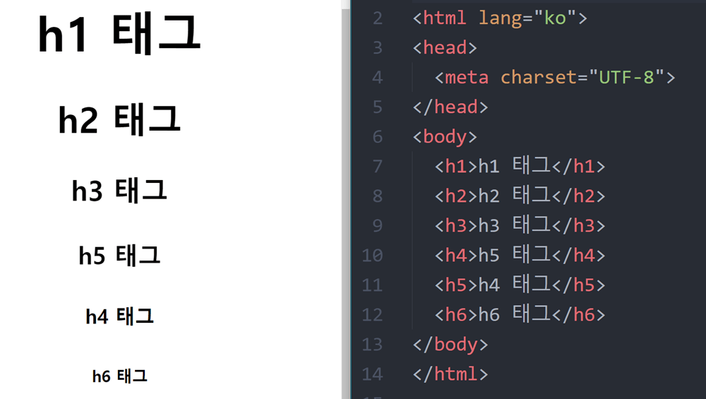

상황에 맞는 태그를 쓰는것이 중요하다. 사람은 이미지를 인식해 의미를 인식하지만, 컴퓨터는 태그에 따라 의미가 다르게 인식된다. 
단순히 글자크기를 키워서 제목으로 만든것과 h태그를 이용해 제목으로 만든것은 본질적으로 다르다
태그를 이용해 제목으로 만들어야 컴퓨터도 제목으로서 인식을해 검색 엔진을 이용해 검색을 할경우 상위페이지에 링크된다.
title 태그를 이용하면 내가 만든 웹페이지의 헤드라인이 정해지는것이다. 이런 태그를 적절하게 사용하는것은 굉장히 중요하다.
부모태그와 자식 태그를 아는것도 중요함 li태그만 써도 작동은 하나 다른것들과 구분을 짓기 위해 ol, ul태그를 이용하여 같은 것끼리 묶는다. 물론 리스트의 특징도 정의해준다.
charset=character set의 약자다.
src= source
br=break link
.
.
.